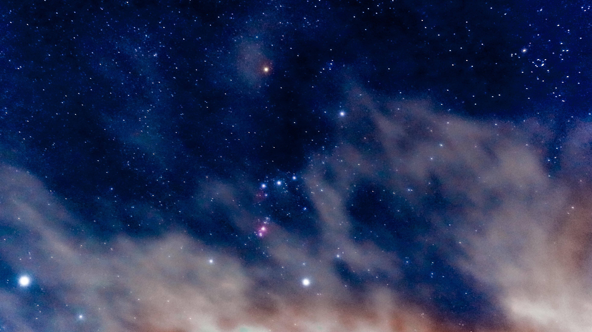

- Walburga Black
- Orion Black
- Sirius Black
- Regulus Arcturus Black
- Druella Black
- Cygnus Black
- Bellatrix Black
- Andromeda Black
- Narcissa Black
Orion Black

Orion Black (1929 – 1979) was a British pure-blood wizard. He was the only son of Arcturus Black III and Melania Macmillan. He was the senior male-line descendant of the House of Black, a family which could trace its magical ancestors back to at least the Middle Ages and which was recognised as one of the Sacred Twenty-Eight.
He married his second cousin, Walburga Black, and the couple had two sons: Sirius and Regulus Black. Both his sons were heroes of the Wizarding Wars.